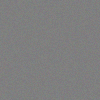
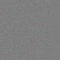
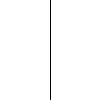
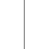
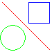
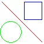

Unsurprisingly, there's often the need to compare images for equality in libgd's test suite, and the libgd test framework offers some helpers to make that very easy. However, there's sometimes the need to cater to some minor differences in the images caused by limited precision and rounding issues, so in addition to exact image comparision we need also helpers which are tolerant with regard to minor differences.
Not long ago, Pierre suggested to adopt pdiff for that purpose, so I had a closer look at this tool and potential alternatives.
Searching the web for "image similarity" and related keywords showed that there are a lot of tools and algorithms available for this purpose. It seems, though, that most of these are per se unsuitable for libgd's testing purposes, but rather are meant for finding similar images in a large collection, thereby ignoring differences which are inacceptable for our purposes, such as different image sizes/proportions, different scaling, displacement etc. We can reject these tools/algorithms right away.
A very simple algorithm, that might be suitable for libgd's testing
purposes is based on the Euclidean distance of the color and alpha
channels of pixels. This is calculated as the square root of the sum
of the squares of the individual channel differences, which can be
compared against a given threshold. Consider, for instance, two
pixels with rgba(127, 127, 127, 63) and rgba(128,
128, 128, 64). The Euclidean distance is
sqrt(12 + 12 + 12 +
12) = sqrt(4) = 2. ediff.php which employs this algorithm can be
found in the appendix.
To be able to practically compare both tools we need suitable image samples. We'll consider the following cases:
We use pdiff with the default parameters using a
threshold of 0. Of the other parameters most likely
only colorfactor and downsample would be
relevant, but we ignore these as the same techniques could be
applied to ediff as well (and probably neither is desirable). We
compare the results to ediff with threshold 0, 2 and 16. The
resulting numbers are the number of pixels which are considered
different and their percentage of all pixels of the image.
We create our samples dynamically, with fuzzer.php which can be found in the appendix. The resulting images are:
 
| pdiff | ediff 0 | ediff 2 | ediff 16 | |
|---|---|---|---|---|
| plain1 | 0 (0%) | 8619 (86%) | 0 (0%) | 0 (0%) |
| plain2 | 100 (1%) | 9684 (97%) | 0 (0%) | 0 (0%) |
| plain4 | 3036 (30%) | 9961 (100%) | 8693 (87%) | 0 (0%) |
| plain8 | 7055 (71%) | 9994 (100%) | 9827 (98%) | 0 (0%) |
| plain16 | 9127 (91%) | 10000 (100%) | 9988 (100%) | 0 (0%) |
We're comparing the following images with a simple vertical line. Both appear identical, but the line is displaced by a single pixel.
 
| pdiff | ediff 0 | ediff 2 | ediff 16 |
|---|---|---|---|
| 200 (2%) | 200 (2%) | 200 (2%) | 200 (2%) |
We take PNG images as input, convert to JPEG respectively WebP, re-import and convert to PNG again. We compare the following pairs of images:
 
| pdiff | ediff 0 | ediff 2 | ediff 16 | |
|---|---|---|---|---|
| bali | 22288 (45%) | 48961 (100%) | 47468 (97%) | 14681 (30%) |
| drawing | 1260 (22%) | 3745 (67%) | 2421 (43%) | 880 (16%) |
We're comparing an image of the libgd test suite against an image produced by a an old floating point unit.
| pdiff | ediff 0 | ediff 2 | ediff 16 | |
|---|---|---|---|---|
| bali | 414 (1%) | 14143 (46%) | 6729 (22%) | 611 (2%) |
As can be seen from the test results, pdiff does a good job recognizing similar images without providing false positives (what can be concluded from the displacement test). Due to its advanced algorithm it delivers better results than the simple ediff with a reasonable treshold of 2 with regard to lossy compression and broken floating point calculations. It also delivers good results for slight precision/rounding errors.
However, it appears that pdiff is still not good enough to test the results of lossy encodings; we hardly can ignore 22% or even 45% of pixels that would change in an automated test – actually the image could look very different. With regard to limited precision/ rounding issues, ediff does a comparably good job (if not better). Furthermore, it turned out that even the PHP implementation of ediff is somewhat faster than pdiff – not too important for the test suite, but still.
Therefore I don't think it makes sense to add pdiff to the libgd test framework, particularly with regard to build, maintainance and license issues. ediff doesn't have these issues and also does a decent job. Unfortunately, neither tool solves all issues …
The following PHP script verifies the similarity of PNG images by
comparing the Euclidean pixel distance against a threshold
(tolerance), and reports the number of pixels that exceed this
threshold. Note that the script also can test for exact image
identity, if 0 is passed as threshold.
<?php
if ($argc !== 4) {
die("usage: $argv[0] <tolerance> <file1> <file2>\n");
}
$tolerance = $argv[1];
$filename1 = $argv[2];
$filename2 = $argv[3];
$im1 = imagecreatefrompng($filename1);
$im2 = imagecreatefrompng($filename2);
assert(imagesx($im1) === imagesx($im2));
assert(imagesy($im1) === imagesy($im2));
$changed = 0;
for ($i = imagesx($im1) - 1; $i >= 0; $i--) {
for ($j = imagesy($im1) - 1; $j >= 0; $j--) {
$c1 = imagecolorat($im1, $i, $j);
$c2 = imagecolorat($im2, $i, $j);
if ($c1 === $c2) continue;
$c1 = imagecolorsforindex($im1, $c1);
$c2 = imagecolorsforindex($im2, $c2);
$d = 2 * ($c1['alpha'] - $c2['alpha']);
$sum = $d * $d;
$d = $c1['red'] - $c2['red'];
$sum += $d * $d;
$d = $c1['green'] - $c2['green'];
$sum += $d * $d;
$d = $c1['blue'] - $c2['blue'];
$sum += $d * $d;
if (sqrt($sum) > $tolerance) {
$changed++;
}
}
}
echo "$changed pixels are different\n";
The following PHP script creates single-colored images with a given fault tolerance.
<?php
if ($argc !== 2) {
die("usage: $argv[0] <tolerance>\n");
}
$tolerance = $argv[1];
$im = imagecreatetruecolor(100,100);
for ($i = 0; $i < 100; $i++) {
for ($j = 0; $j < 100; $j++) {
imagesetpixel($im, $i, $j, random_color($im));
}
}
imagepng($im, "plain$tolerance.png");
function random_color($im)
{
global $tolerance;
do {
$r = mt_rand(127-$tolerance, 127+$tolerance);
$g = mt_rand(127-$tolerance, 127+$tolerance);
$b = mt_rand(127-$tolerance, 127+$tolerance);
} while (sqrt(($r-127)**2 + ($g-127)**2 + ($b-127)**2) > $tolerance);
return imagecolorallocate($im, $r, $g, $b);
}